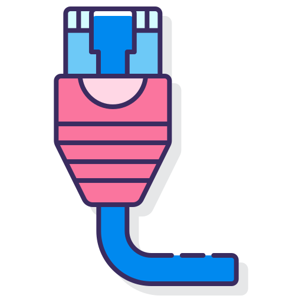

Tire suas dúvidas
sobre Conexões

Internet por fibra óptica: o que é e como funciona?
A fibra ótica é um cabo fino e flexível usado pra transmitir dados na velocidade da luz. Essa tecnologia é usada pra levar uma internet de alta velocidade direto pra sua residência. A Oi Fibra é a internet por fibra ótica de alta tecnologia da Oi. Com ela, você pode ter uma internet mais rápida, estável e de qualidade, ideal para ver todos os seus filmes e séries e jogar com menos lag!
Internet Via Rádio: o que é e como funciona?
A fibra ótica é um cabo fino e flexível usado pra transmitir dados na velocidade da luz. Essa tecnologia é usada pra levar uma internet de alta velocidade direto pra sua residência. A Oi Fibra é a internet por fibra ótica de alta tecnologia da Oi. Com ela, você pode ter uma internet mais rápida, estável e de qualidade, ideal para ver todos os seus filmes e séries e jogar com menos lag!
Qual o plano ideal para a minha residência?
A fibra ótica é um cabo fino e flexível usado pra transmitir dados na velocidade da luz. Essa tecnologia é usada pra levar uma internet de alta velocidade direto pra sua residência. A Oi Fibra é a internet por fibra ótica de alta tecnologia da Oi. Com ela, você pode ter uma internet mais rápida, estável e de qualidade, ideal para ver todos os seus filmes e séries e jogar com menos lag!
Como contratar um plano
A fibra ótica é um cabo fino e flexível usado pra transmitir dados na velocidade da luz. Essa tecnologia é usada pra levar uma internet de alta velocidade direto pra sua residência. A Oi Fibra é a internet por fibra ótica de alta tecnologia da Oi. Com ela, você pode ter uma internet mais rápida, estável e de qualidade, ideal para ver todos os seus filmes e séries e jogar com menos lag!
Fale Conosco